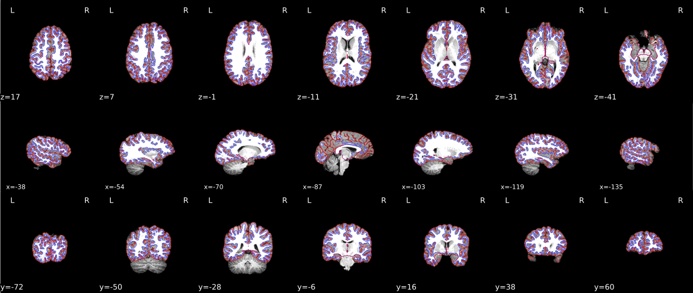

Fmriprep Example#
Author: Steffen Bollmann
Setup Neurodesk#
%%capture
import os
import sys
IN_COLAB = 'google.colab' in sys.modules
if IN_COLAB:
os.environ["LD_PRELOAD"] = "";
os.environ["APPTAINER_BINDPATH"] = "/content,/tmp,/cvmfs"
os.environ["MPLCONFIGDIR"] = "/content/matplotlib-mpldir"
os.environ["LMOD_CMD"] = "/usr/share/lmod/lmod/libexec/lmod"
!curl -J -O https://raw.githubusercontent.com/NeuroDesk/neurocommand/main/googlecolab_setup.sh
!chmod +x googlecolab_setup.sh
!./googlecolab_setup.sh
os.environ["MODULEPATH"] = ':'.join(map(str, list(map(lambda x: os.path.join(os.path.abspath('/cvmfs/neurodesk.ardc.edu.au/neurodesk-modules/'), x),os.listdir('/cvmfs/neurodesk.ardc.edu.au/neurodesk-modules/')))))
# Output CPU information:
!cat /proc/cpuinfo | grep 'vendor' | uniq
!cat /proc/cpuinfo | grep 'model name' | uniq
vendor_id : GenuineIntel
model name : Intel(R) Xeon(R) Platinum 8167M CPU @ 2.00GHz
Example#
# load fmriprep
import lmod
import os
await lmod.load('fmriprep/22.1.1')
await lmod.list()
['Lmod',
'Warning:',
'The',
'environment',
'MODULEPATH',
'has',
'been',
'changed',
'in',
'unexpected',
'ways.',
'Lmod',
'is',
'unable',
'to',
'use',
'given',
'MODULEPATH.',
'It',
'is',
'using:',
'"/cvmfs/neurodesk.ardc.edu.au/neurodesk-modules/functional_imaging:/cvmfs/neurodesk.ardc.edu.au/neurodesk-modules/rodent_imaging:/cvmfs/neurodesk.ardc.edu.au/neurodesk-modules/image_registration:/cvmfs/neurodesk.ardc.edu.au/neurodesk-modules/structural_imaging:/cvmfs/neurodesk.ardc.edu.au/neurodesk-modules/image_segmentation:/cvmfs/neurodesk.ardc.edu.au/neurodesk-modules/quantitative_imaging:/cvmfs/neurodesk.ardc.edu.au/neurodesk-modules/workflows:/cvmfs/neurodesk.ardc.edu.au/neurodesk-modules/hippocampus:/cvmfs/neurodesk.ardc.edu.au/neurodesk-modules/image_reconstruction:/cvmfs/neurodesk.ardc.edu.au/neurodesk-modules/data_organisation:/cvmfs/neurodesk.ardc.edu.au/neurodesk-modules/electrophysiology:/cvmfs/neurodesk.ardc.edu.au/neurodesk-modules/phase_processing:/cvmfs/neurodesk.ardc.edu.au/neurodesk-modules/programming:/cvmfs/neurodesk.ardc.edu.au/neurodesk-modules/machine_learning:/cvmfs/neurodesk.ardc.edu.au/neurodesk-modules/diffusion_imaging:/cvmfs/neurodesk.ardc.edu.au/neurodesk-modules/body:/cvmfs/neurodesk.ardc.edu.au/neurodesk-modules/visualization:/cvmfs/neurodesk.ardc.edu.au/neurodesk-modules/spectroscopy:/cvmfs/neurodesk.ardc.edu.au/neurodesk-modules/quality_control:/cvmfs/neurodesk.ardc.edu.au/neurodesk-modules/statistics:/cvmfs/neurodesk.ardc.edu.au/neurodesk-modules/shape_analysis:/cvmfs/neurodesk.ardc.edu.au/neurodesk-modules/spine:/cvmfs/neurodesk.ardc.edu.au/neurodesk-modules/molecular_biology:/cvmfs/neurodesk.ardc.edu.au/neurodesk-modules/bids_apps::".',
'Please',
'use',
'"module',
'use',
'to',
'change',
'MODULEPATH',
'instead.',
'fmriprep/22.1.1']
# Request a freesurfer license and store it in your homedirectory. This is just an exampe - please replace with your license id:
!echo "Steffen.Bollmann@cai.uq.edu.au" > ~/.license
!echo "21029" >> ~/.license
!echo "*Cqyn12sqTCxo" >> ~/.license
!echo "FSxgcvGkNR59Y" >> ~/.license
# download data
!datalad install https://github.com/OpenNeuroDatasets/ds000102.git
!cd ds000102 && datalad get sub-08
It is highly recommended to configure Git before using DataLad. Set both 'user.name' and 'user.email' configuration variables.
Clone attempt: 0%| | 0.00/2.00 [00:00<?, ? Candidate locations/s]
Enumerating: 0.00 Objects [00:00, ? Objects/s]
Counting: 0%| | 0.00/27.0 [00:00<?, ? Objects/s]
Compressing: 0%| | 0.00/23.0 [00:00<?, ? Objects/s]
Receiving: 0%| | 0.00/2.15k [00:00<?, ? Objects/s]
Resolving: 0%| | 0.00/537 [00:00<?, ? Deltas/s]
[INFO ] Author identity unknown
|
| *** Please tell me who you are.
|
| Run
|
| git config --global user.email "you@example.com"
| git config --global user.name "Your Name"
|
| to set your account's default identity.
| Omit --global to set the identity only in this repository.
[INFO ] fatal: unable to auto-detect email address (got 'runnerx@cirun-neurodesk--example-notebooks-b62c5d0.(none)')
[INFO ] scanning for unlocked files (this may take some time)
[INFO ] Remote origin not usable by git-annex; setting annex-ignore
[INFO ] access to 1 dataset sibling s3-PRIVATE not auto-enabled, enable with:
| datalad siblings -d "/tmp/tmprd69z93z/ds000102" enable -s s3-PRIVATE
install(ok): /tmp/tmprd69z93z/ds000102 (dataset)
It is highly recommended to configure Git before using DataLad. Set both 'user.name' and 'user.email' configuration variables.
Total: 0%| | 0.00/67.8M [00:00<?, ? Bytes/s]
Get sub-08/a .. 8_T1w.nii.gz: 0%| | 0.00/10.6M [00:00<?, ? Bytes/s]
Get sub-08/a .. 8_T1w.nii.gz: 1%| | 68.2k/10.6M [00:00<00:30, 348k Bytes/s]
Get sub-08/a .. 8_T1w.nii.gz: 1%| | 120k/10.6M [00:00<00:28, 366k Bytes/s]
Get sub-08/a .. 8_T1w.nii.gz: 3%|▏ | 277k/10.6M [00:00<00:13, 771k Bytes/s]
Get sub-08/a .. 8_T1w.nii.gz: 5%|▏ | 573k/10.6M [00:00<00:06, 1.49M Bytes/s]
Get sub-08/a .. 8_T1w.nii.gz: 11%|▎ | 1.13M/10.6M [00:00<00:03, 2.78M Bytes/s]
Get sub-08/a .. 8_T1w.nii.gz: 21%|▋ | 2.21M/10.6M [00:00<00:01, 5.28M Bytes/s]
Get sub-08/a .. 8_T1w.nii.gz: 56%|█▋ | 5.87M/10.6M [00:00<00:00, 11.4M Bytes/s]
Get sub-08/a .. 8_T1w.nii.gz: 74%|██▏| 7.87M/10.6M [00:01<00:00, 13.5M Bytes/s]
Get sub-08/a .. 8_T1w.nii.gz: 93%|██▊| 9.86M/10.6M [00:01<00:00, 15.2M Bytes/s]
Total: 16%|████ | 10.6M/67.8M [00:01<00:10, 5.38M Bytes/s]
Get sub-08/f .. _bold.nii.gz: 0%| | 0.00/28.6M [00:00<?, ? Bytes/s]
Get sub-08/f .. _bold.nii.gz: 14%|▍ | 3.94M/28.6M [00:00<00:01, 19.7M Bytes/s]
Get sub-08/f .. _bold.nii.gz: 21%|▋ | 5.99M/28.6M [00:00<00:01, 19.7M Bytes/s]
Get sub-08/f .. _bold.nii.gz: 34%|█ | 9.86M/28.6M [00:00<00:00, 19.7M Bytes/s]
Get sub-08/f .. _bold.nii.gz: 41%|█▏ | 11.8M/28.6M [00:00<00:00, 19.7M Bytes/s]
Get sub-08/f .. _bold.nii.gz: 48%|█▍ | 13.8M/28.6M [00:00<00:00, 19.7M Bytes/s]
Get sub-08/f .. _bold.nii.gz: 55%|█▋ | 15.8M/28.6M [00:00<00:00, 19.7M Bytes/s]
Get sub-08/f .. _bold.nii.gz: 62%|█▊ | 17.7M/28.6M [00:00<00:00, 19.6M Bytes/s]
Get sub-08/f .. _bold.nii.gz: 69%|██ | 19.7M/28.6M [00:01<00:00, 19.6M Bytes/s]
Get sub-08/f .. _bold.nii.gz: 76%|██▎| 21.7M/28.6M [00:01<00:00, 19.6M Bytes/s]
Get sub-08/f .. _bold.nii.gz: 83%|██▍| 23.6M/28.6M [00:01<00:00, 19.7M Bytes/s]
Get sub-08/f .. _bold.nii.gz: 89%|██▋| 25.6M/28.6M [00:01<00:00, 19.7M Bytes/s]
Get sub-08/f .. _bold.nii.gz: 96%|██▉| 27.6M/28.6M [00:01<00:00, 19.6M Bytes/s]
Total: 58%|███████████████ | 39.2M/67.8M [00:03<00:02, 10.5M Bytes/s]
Get sub-08/f .. _bold.nii.gz: 0%| | 0.00/28.6M [00:00<?, ? Bytes/s]
Get sub-08/f .. _bold.nii.gz: 7%|▏ | 1.96M/28.6M [00:00<00:01, 19.6M Bytes/s]
Get sub-08/f .. _bold.nii.gz: 17%|▌ | 4.86M/28.6M [00:00<00:01, 18.7M Bytes/s]
Get sub-08/f .. _bold.nii.gz: 27%|▊ | 7.70M/28.6M [00:00<00:01, 19.2M Bytes/s]
Get sub-08/f .. _bold.nii.gz: 34%|█ | 9.68M/28.6M [00:00<00:00, 19.4M Bytes/s]
Get sub-08/f .. _bold.nii.gz: 47%|█▍ | 13.5M/28.6M [00:00<00:00, 19.3M Bytes/s]
Get sub-08/f .. _bold.nii.gz: 54%|█▋ | 15.5M/28.6M [00:00<00:00, 19.4M Bytes/s]
Get sub-08/f .. _bold.nii.gz: 61%|█▊ | 17.5M/28.6M [00:00<00:00, 19.5M Bytes/s]
Get sub-08/f .. _bold.nii.gz: 68%|██ | 19.5M/28.6M [00:01<00:00, 19.5M Bytes/s]
Get sub-08/f .. _bold.nii.gz: 75%|██▏| 21.4M/28.6M [00:01<00:00, 19.6M Bytes/s]
Get sub-08/f .. _bold.nii.gz: 82%|██▍| 23.4M/28.6M [00:01<00:00, 19.6M Bytes/s]
Get sub-08/f .. _bold.nii.gz: 96%|██▊| 27.4M/28.6M [00:01<00:00, 19.6M Bytes/s]
get(ok): sub-08/anat/sub-08_T1w.nii.gz (file) [from s3-PUBLIC...]
get(ok): sub-08/func/sub-08_task-flanker_run-1_bold.nii.gz (file) [from s3-PUBLIC...]
get(ok): sub-08/func/sub-08_task-flanker_run-2_bold.nii.gz (file) [from s3-PUBLIC...]
get(ok): sub-08 (directory)
action summary:
get (ok: 4)
!export ITK_GLOBAL_DEFAULT_NUMBER_OF_THREADS=2 && export MPLCONFIGDIR=~/matplotlib-mpldir && fmriprep ds000102/ content/ participant --fs-license-file ~/.license --output-spaces T1w MNI152NLin2009cAsym fsaverage fsnative --participant-label 08 --nprocs $ITK_GLOBAL_DEFAULT_NUMBER_OF_THREADS --mem 10000 --skip_bids_validation -v
You are using fMRIPrep-22.1.1, and a newer version of fMRIPrep is available: 23.1.4.
Please check out our documentation about how and when to upgrade:
https://fmriprep.readthedocs.io/en/latest/faq.html#upgrading
--topup-max-vols input is no longer used and the flag will be removed in a future release.
231218-23:29:42,184 cli INFO:
Telemetry system to collect crashes and errors is enabled - thanks for your feedback!. Use option ``--notrack`` to opt out.
Fontconfig error: No writable cache directories
Fontconfig error: No writable cache directories
Fontconfig error: No writable cache directories
Fontconfig error: No writable cache directories
Fontconfig error: No writable cache directories
Matplotlib is building the font cache; this may take a moment.
Fontconfig error: No writable cache directories
Fontconfig error: No writable cache directories
Fontconfig error: No writable cache directories
Fontconfig error: No writable cache directories
231218-23:30:15,79 nipype.workflow IMPORTANT:
Running fMRIPrep version 22.1.1
License NOTICE ##################################################
fMRIPrep 22.1.1
Copyright 2022 The NiPreps Developers.
This product includes software developed by
the NiPreps Community (https://nipreps.org/).
Portions of this software were developed at the Department of
Psychology at Stanford University, Stanford, CA, US.
This software redistributes the versioneer Python package, which is
Public domain source code.
This software is also distributed as a Docker container image.
The bootstraping file for the image ("Dockerfile") is licensed
under the MIT License.
This software may be distributed through an add-on package called
"Docker Wrapper" that is under the BSD 3-clause License.
#################################################################
231218-23:30:15,292 nipype.workflow IMPORTANT:
Building fMRIPrep's workflow:
* BIDS dataset path: /tmp/tmprd69z93z/ds000102.
* Participant list: ['08'].
* Run identifier: 20231218-232936_89580bef-3673-40e0-979c-37bb9a0aa905.
* Output spaces: T1w MNI152NLin2009cAsym:res-native fsaverage:den-164k fsnative.
* Pre-run FreeSurfer's SUBJECTS_DIR: /tmp/tmprd69z93z/content/sourcedata/freesurfer.
231218-23:30:25,847 nipype.workflow INFO:
No single-band-reference found for sub-08_task-flanker_run-1_bold.nii.gz.
231218-23:30:26,562 nipype.workflow INFO:
No single-band-reference found for sub-08_task-flanker_run-2_bold.nii.gz.
231218-23:30:31,969 nipype.workflow INFO:
fMRIPrep workflow graph with 619 nodes built successfully.
231218-23:30:54,479 nipype.workflow IMPORTANT:
fMRIPrep started!
231218-23:30:55,46 nipype.workflow INFO:
Workflow fmriprep_22_1_wf settings: ['check', 'execution', 'logging', 'monitoring']
231218-23:30:55,547 nipype.workflow INFO:
Running in parallel.
231218-23:30:55,550 nipype.workflow WARNING:
Some nodes exceed the total amount of memory available (10.00GB).
231218-23:30:55,564 nipype.workflow INFO:
[MultiProc] Running 0 tasks, and 23 jobs ready. Free memory (GB): 10.00/10.00, Free processors: 2/2.
231218-23:30:55,702 nipype.workflow INFO:
[Node] Setting-up "fmriprep_22_1_wf.fsdir_run_20231218_232936_89580bef_3673_40e0_979c_37bb9a0aa905" in "/tmp/tmprd69z93z/work/fmriprep_22_1_wf/fsdir_run_20231218_232936_89580bef_3673_40e0_979c_37bb9a0aa905".
231218-23:30:55,705 nipype.workflow INFO:
[Node] Executing "fsdir_run_20231218_232936_89580bef_3673_40e0_979c_37bb9a0aa905" <niworkflows.interfaces.bids.BIDSFreeSurferDir>
231218-23:31:03,531 nipype.workflow INFO:
[Node] Finished "fsdir_run_20231218_232936_89580bef_3673_40e0_979c_37bb9a0aa905", elapsed time 7.809806s.
231218-23:31:03,535 nipype.workflow INFO:
[Job 0] Completed (fmriprep_22_1_wf.fsdir_run_20231218_232936_89580bef_3673_40e0_979c_37bb9a0aa905).
231218-23:31:03,689 nipype.workflow INFO:
[Node] Setting-up "fmriprep_22_1_wf.single_subject_08_wf.about" in "/tmp/tmprd69z93z/work/fmriprep_22_1_wf/single_subject_08_wf/about".
231218-23:31:03,692 nipype.workflow INFO:
[Node] Executing "about" <fmriprep.interfaces.reports.AboutSummary>
231218-23:31:03,693 nipype.workflow INFO:
[Node] Finished "about", elapsed time 0.000337s.
231218-23:31:03,695 nipype.workflow INFO:
[Job 2] Completed (fmriprep_22_1_wf.single_subject_08_wf.about).
231218-23:31:03,818 nipype.workflow INFO:
[MultiProc] Running 2 tasks, and 19 jobs ready. Free memory (GB): 9.60/10.00, Free processors: 0/2.
Currently running:
* fmriprep_22_1_wf.single_subject_08_wf.anat_preproc_wf.brain_extraction_wf.res_tmpl
* fmriprep_22_1_wf.single_subject_08_wf.bidssrc
231218-23:31:08,301 nipype.workflow INFO:
[Node] Setting-up "fmriprep_22_1_wf.single_subject_08_wf.anat_preproc_wf.brain_extraction_wf.res_tmpl" in "/tmp/tmprd69z93z/work/fmriprep_22_1_wf/single_subject_08_wf/anat_preproc_wf/brain_extraction_wf/res_tmpl".
231218-23:31:08,303 nipype.workflow INFO:
[Node] Executing "res_tmpl" <niworkflows.interfaces.nibabel.RegridToZooms>
231218-23:31:10,59 nipype.workflow INFO:
[Node] Setting-up "fmriprep_22_1_wf.single_subject_08_wf.bidssrc" in "/tmp/tmprd69z93z/work/fmriprep_22_1_wf/single_subject_08_wf/bidssrc".
231218-23:31:10,61 nipype.workflow INFO:
[Node] Executing "bidssrc" <niworkflows.interfaces.bids.BIDSDataGrabber>
231218-23:31:10,71 nipype.interface INFO:
No "t2w" images found for sub-08
231218-23:31:10,72 nipype.interface INFO:
No "flair" images found for sub-08
231218-23:31:10,72 nipype.interface INFO:
No "fmap" images found for sub-08
231218-23:31:10,72 nipype.interface INFO:
No "sbref" images found for sub-08
231218-23:31:10,72 nipype.interface INFO:
No "roi" images found for sub-08
231218-23:31:10,73 nipype.workflow INFO:
[Node] Finished "bidssrc", elapsed time 0.001518s.
231218-23:31:10,630 nipype.workflow INFO:
[Node] Finished "res_tmpl", elapsed time 2.316636s.
231218-23:31:11,825 nipype.workflow INFO:
[Job 1] Completed (fmriprep_22_1_wf.single_subject_08_wf.bidssrc).
231218-23:31:11,826 nipype.workflow INFO:
[Job 3] Completed (fmriprep_22_1_wf.single_subject_08_wf.anat_preproc_wf.brain_extraction_wf.res_tmpl).
231218-23:31:11,829 nipype.workflow INFO:
[MultiProc] Running 0 tasks, and 22 jobs ready. Free memory (GB): 10.00/10.00, Free processors: 2/2.
231218-23:31:11,948 nipype.workflow INFO:
[Node] Setting-up "fmriprep_22_1_wf.single_subject_08_wf.anat_preproc_wf.brain_extraction_wf.full_wm" in "/tmp/tmprd69z93z/work/fmriprep_22_1_wf/single_subject_08_wf/anat_preproc_wf/brain_extraction_wf/full_wm".
231218-23:31:11,950 nipype.workflow INFO:
[Node] Executing "full_wm" <nipype.interfaces.utility.wrappers.Function>
231218-23:31:11,981 nipype.workflow INFO:
[Node] Setting-up "fmriprep_22_1_wf.single_subject_08_wf.anat_preproc_wf.brain_extraction_wf.lap_tmpl" in "/tmp/tmprd69z93z/work/fmriprep_22_1_wf/single_subject_08_wf/anat_preproc_wf/brain_extraction_wf/lap_tmpl".
231218-23:31:11,983 nipype.workflow INFO:
[Node] Executing "lap_tmpl" <nipype.interfaces.ants.utils.ImageMath>
231218-23:31:12,843 nipype.workflow INFO:
[Node] Finished "full_wm", elapsed time 0.891381s.
231218-23:31:13,827 nipype.workflow INFO:
[Job 4] Completed (fmriprep_22_1_wf.single_subject_08_wf.anat_preproc_wf.brain_extraction_wf.full_wm).
231218-23:31:13,830 nipype.workflow INFO:
[MultiProc] Running 1 tasks, and 20 jobs ready. Free memory (GB): 9.80/10.00, Free processors: 1/2.
Currently running:
* fmriprep_22_1_wf.single_subject_08_wf.anat_preproc_wf.brain_extraction_wf.lap_tmpl
231218-23:31:13,952 nipype.workflow INFO:
[Node] Setting-up "fmriprep_22_1_wf.single_subject_08_wf.func_preproc_task_flanker_run_1_wf.bold_source" in "/tmp/tmprd69z93z/work/fmriprep_22_1_wf/single_subject_08_wf/func_preproc_task_flanker_run_1_wf/bold_source".
231218-23:31:13,954 nipype.workflow INFO:
[Node] Executing "bold_source" <nipype.interfaces.utility.base.Select>
231218-23:31:13,956 nipype.workflow INFO:
[Node] Finished "bold_source", elapsed time 0.000548s.
231218-23:31:15,829 nipype.workflow INFO:
[Job 6] Completed (fmriprep_22_1_wf.single_subject_08_wf.func_preproc_task_flanker_run_1_wf.bold_source).
231218-23:31:15,832 nipype.workflow INFO:
[MultiProc] Running 1 tasks, and 19 jobs ready. Free memory (GB): 9.80/10.00, Free processors: 1/2.
Currently running:
* fmriprep_22_1_wf.single_subject_08_wf.anat_preproc_wf.brain_extraction_wf.lap_tmpl
231218-23:31:15,948 nipype.workflow INFO:
[Node] Setting-up "fmriprep_22_1_wf.single_subject_08_wf.func_preproc_task_flanker_run_1_wf.func_derivatives_wf.raw_sources" in "/tmp/tmprd69z93z/work/fmriprep_22_1_wf/single_subject_08_wf/func_preproc_task_flanker_run_1_wf/func_derivatives_wf/raw_sources".
231218-23:31:15,950 nipype.workflow INFO:
[Node] Executing "raw_sources" <nipype.interfaces.utility.wrappers.Function>
231218-23:31:15,952 nipype.workflow INFO:
[Node] Finished "raw_sources", elapsed time 0.00061s.
231218-23:31:17,831 nipype.workflow INFO:
[Job 7] Completed (fmriprep_22_1_wf.single_subject_08_wf.func_preproc_task_flanker_run_1_wf.func_derivatives_wf.raw_sources).
231218-23:31:17,834 nipype.workflow INFO:
[MultiProc] Running 1 tasks, and 18 jobs ready. Free memory (GB): 9.80/10.00, Free processors: 1/2.
Currently running:
* fmriprep_22_1_wf.single_subject_08_wf.anat_preproc_wf.brain_extraction_wf.lap_tmpl
231218-23:31:17,963 nipype.workflow INFO:
[Node] Setting-up "_val_bold0" in "/tmp/tmprd69z93z/work/fmriprep_22_1_wf/single_subject_08_wf/func_preproc_task_flanker_run_1_wf/initial_boldref_wf/val_bold/mapflow/_val_bold0".
231218-23:31:17,965 nipype.workflow INFO:
[Node] Executing "_val_bold0" <niworkflows.interfaces.header.ValidateImage>
231218-23:31:18,40 nipype.workflow INFO:
[Node] Finished "_val_bold0", elapsed time 0.073807s.
231218-23:31:19,833 nipype.workflow INFO:
[Job 8] Completed (fmriprep_22_1_wf.single_subject_08_wf.func_preproc_task_flanker_run_1_wf.initial_boldref_wf.val_bold).
231218-23:31:19,836 nipype.workflow INFO:
[MultiProc] Running 1 tasks, and 19 jobs ready. Free memory (GB): 9.80/10.00, Free processors: 1/2.
Currently running:
* fmriprep_22_1_wf.single_subject_08_wf.anat_preproc_wf.brain_extraction_wf.lap_tmpl
231218-23:31:19,955 nipype.workflow INFO:
[Node] Setting-up "fmriprep_22_1_wf.single_subject_08_wf.func_preproc_task_flanker_run_1_wf.initial_boldref_wf.get_dummy" in "/tmp/tmprd69z93z/work/fmriprep_22_1_wf/single_subject_08_wf/func_preproc_task_flanker_run_1_wf/initial_boldref_wf/get_dummy".
231218-23:31:19,957 nipype.workflow INFO:
[Node] Executing "get_dummy" <niworkflows.interfaces.bold.NonsteadyStatesDetector>
231218-23:31:20,665 nipype.workflow INFO:
[Node] Finished "get_dummy", elapsed time 0.706353s.
231218-23:31:21,835 nipype.workflow INFO:
[Job 9] Completed (fmriprep_22_1_wf.single_subject_08_wf.func_preproc_task_flanker_run_1_wf.initial_boldref_wf.get_dummy).
231218-23:31:21,838 nipype.workflow INFO:
[MultiProc] Running 1 tasks, and 20 jobs ready. Free memory (GB): 9.80/10.00, Free processors: 1/2.
Currently running:
* fmriprep_22_1_wf.single_subject_08_wf.anat_preproc_wf.brain_extraction_wf.lap_tmpl
231218-23:31:21,955 nipype.workflow INFO:
[Node] Setting-up "fmriprep_22_1_wf.single_subject_08_wf.func_preproc_task_flanker_run_2_wf.bold_source" in "/tmp/tmprd69z93z/work/fmriprep_22_1_wf/single_subject_08_wf/func_preproc_task_flanker_run_2_wf/bold_source".
231218-23:31:21,956 nipype.workflow INFO:
[Node] Executing "bold_source" <nipype.interfaces.utility.base.Select>
231218-23:31:21,958 nipype.workflow INFO:
[Node] Finished "bold_source", elapsed time 0.000402s.
231218-23:31:22,748 nipype.workflow INFO:
[Node] Finished "lap_tmpl", elapsed time 10.502333s.
231218-23:31:23,837 nipype.workflow INFO:
[Job 5] Completed (fmriprep_22_1_wf.single_subject_08_wf.anat_preproc_wf.brain_extraction_wf.lap_tmpl).
231218-23:31:23,838 nipype.workflow INFO:
[Job 10] Completed (fmriprep_22_1_wf.single_subject_08_wf.func_preproc_task_flanker_run_2_wf.bold_source).
231218-23:31:23,841 nipype.workflow INFO:
[MultiProc] Running 0 tasks, and 20 jobs ready. Free memory (GB): 10.00/10.00, Free processors: 2/2.
231218-23:31:23,956 nipype.workflow INFO:
[Node] Setting-up "fmriprep_22_1_wf.single_subject_08_wf.func_preproc_task_flanker_run_2_wf.func_derivatives_wf.raw_sources" in "/tmp/tmprd69z93z/work/fmriprep_22_1_wf/single_subject_08_wf/func_preproc_task_flanker_run_2_wf/func_derivatives_wf/raw_sources".
231218-23:31:23,957 nipype.workflow INFO:
[Node] Executing "raw_sources" <nipype.interfaces.utility.wrappers.Function>
231218-23:31:23,959 nipype.workflow INFO:
[Node] Finished "raw_sources", elapsed time 0.000526s.
231218-23:31:23,969 nipype.workflow INFO:
[Node] Setting-up "_val_bold0" in "/tmp/tmprd69z93z/work/fmriprep_22_1_wf/single_subject_08_wf/func_preproc_task_flanker_run_2_wf/initial_boldref_wf/val_bold/mapflow/_val_bold0".
231218-23:31:23,971 nipype.workflow INFO:
[Node] Executing "_val_bold0" <niworkflows.interfaces.header.ValidateImage>
231218-23:31:24,47 nipype.workflow INFO:
[Node] Finished "_val_bold0", elapsed time 0.075428s.
231218-23:31:25,839 nipype.workflow INFO:
[Job 11] Completed (fmriprep_22_1_wf.single_subject_08_wf.func_preproc_task_flanker_run_2_wf.func_derivatives_wf.raw_sources).
231218-23:31:25,840 nipype.workflow INFO:
[Job 12] Completed (fmriprep_22_1_wf.single_subject_08_wf.func_preproc_task_flanker_run_2_wf.initial_boldref_wf.val_bold).
231218-23:31:25,843 nipype.workflow INFO:
[MultiProc] Running 0 tasks, and 20 jobs ready. Free memory (GB): 10.00/10.00, Free processors: 2/2.
231218-23:31:25,964 nipype.workflow INFO:
[Node] Setting-up "fmriprep_22_1_wf.single_subject_08_wf.anat_preproc_wf.anat_norm_wf.split_desc" in "/tmp/tmprd69z93z/work/fmriprep_22_1_wf/single_subject_08_wf/anat_preproc_wf/anat_norm_wf/_template_MNI152NLin2009cAsym/split_desc".
231218-23:31:25,965 nipype.workflow INFO:
[Node] Setting-up "fmriprep_22_1_wf.single_subject_08_wf.func_preproc_task_flanker_run_2_wf.initial_boldref_wf.get_dummy" in "/tmp/tmprd69z93z/work/fmriprep_22_1_wf/single_subject_08_wf/func_preproc_task_flanker_run_2_wf/initial_boldref_wf/get_dummy".
231218-23:31:25,966 nipype.workflow INFO:
[Node] Executing "split_desc" <smriprep.interfaces.templateflow.TemplateDesc>
231218-23:31:25,967 nipype.workflow INFO:
[Node] Executing "get_dummy" <niworkflows.interfaces.bold.NonsteadyStatesDetector>
231218-23:31:25,967 nipype.workflow INFO:
[Node] Finished "split_desc", elapsed time 0.000157s.
231218-23:31:25,969 nipype.workflow INFO:
[Job 14] Completed (fmriprep_22_1_wf.single_subject_08_wf.anat_preproc_wf.anat_norm_wf.split_desc).
231218-23:31:26,83 nipype.workflow INFO:
[Node] Setting-up "fmriprep_22_1_wf.single_subject_08_wf.anat_preproc_wf.anat_reports_wf.tf_select" in "/tmp/tmprd69z93z/work/fmriprep_22_1_wf/single_subject_08_wf/anat_preproc_wf/anat_reports_wf/_template_MNI152NLin2009cAsym/tf_select".
231218-23:31:26,85 nipype.workflow INFO:
[Node] Executing "tf_select" <smriprep.interfaces.templateflow.TemplateFlowSelect>
231218-23:31:26,119 nipype.workflow INFO:
[Node] Finished "tf_select", elapsed time 0.033214s.
231218-23:31:26,122 nipype.workflow INFO:
[Job 15] Completed (fmriprep_22_1_wf.single_subject_08_wf.anat_preproc_wf.anat_reports_wf.tf_select).
231218-23:31:26,237 nipype.workflow INFO:
[Node] Setting-up "fmriprep_22_1_wf.single_subject_08_wf.func_preproc_task_flanker_run_2_wf.bold_std_trans_wf.split_target" in "/tmp/tmprd69z93z/work/fmriprep_22_1_wf/single_subject_08_wf/func_preproc_task_flanker_run_2_wf/bold_std_trans_wf/_std_target_MNI152NLin2009cAsym.resnative/split_target".
231218-23:31:26,239 nipype.workflow INFO:
[Node] Executing "split_target" <nipype.interfaces.utility.wrappers.Function>
231218-23:31:26,241 nipype.workflow INFO:
[Node] Finished "split_target", elapsed time 0.000527s.
231218-23:31:26,243 nipype.workflow INFO:
[Job 16] Completed (fmriprep_22_1_wf.single_subject_08_wf.func_preproc_task_flanker_run_2_wf.bold_std_trans_wf.split_target).
231218-23:31:26,346 nipype.workflow INFO:
[Node] Setting-up "fmriprep_22_1_wf.single_subject_08_wf.func_preproc_task_flanker_run_2_wf.bold_std_trans_wf.select_tpl" in "/tmp/tmprd69z93z/work/fmriprep_22_1_wf/single_subject_08_wf/func_preproc_task_flanker_run_2_wf/bold_std_trans_wf/_std_target_MNI152NLin2009cAsym.resnative/select_tpl".
231218-23:31:26,348 nipype.workflow INFO:
[Node] Executing "select_tpl" <nipype.interfaces.utility.wrappers.Function>
231218-23:31:26,363 nipype.workflow INFO:
[Node] Finished "select_tpl", elapsed time 0.014315s.
231218-23:31:26,365 nipype.workflow INFO:
[Job 17] Completed (fmriprep_22_1_wf.single_subject_08_wf.func_preproc_task_flanker_run_2_wf.bold_std_trans_wf.select_tpl).
231218-23:31:26,473 nipype.workflow INFO:
[Node] Setting-up "fmriprep_22_1_wf.single_subject_08_wf.func_preproc_task_flanker_run_2_wf.func_derivatives_wf.spacesource" in "/tmp/tmprd69z93z/work/fmriprep_22_1_wf/single_subject_08_wf/func_preproc_task_flanker_run_2_wf/func_derivatives_wf/_in_tuple_MNI152NLin2009cAsym.resnative/spacesource".
231218-23:31:26,474 nipype.workflow INFO:
[Node] Executing "spacesource" <niworkflows.interfaces.space.SpaceDataSource>
231218-23:31:26,476 nipype.workflow INFO:
[Node] Finished "spacesource", elapsed time 0.000204s.
231218-23:31:26,478 nipype.workflow INFO:
[Job 18] Completed (fmriprep_22_1_wf.single_subject_08_wf.func_preproc_task_flanker_run_2_wf.func_derivatives_wf.spacesource).
231218-23:31:26,605 nipype.workflow INFO:
[Node] Setting-up "fmriprep_22_1_wf.single_subject_08_wf.func_preproc_task_flanker_run_1_wf.bold_std_trans_wf.split_target" in "/tmp/tmprd69z93z/work/fmriprep_22_1_wf/single_subject_08_wf/func_preproc_task_flanker_run_1_wf/bold_std_trans_wf/_std_target_MNI152NLin2009cAsym.resnative/split_target".
231218-23:31:26,607 nipype.workflow INFO:
[Node] Executing "split_target" <nipype.interfaces.utility.wrappers.Function>
231218-23:31:26,608 nipype.workflow INFO:
[Node] Finished "split_target", elapsed time 0.000514s.
231218-23:31:26,611 nipype.workflow INFO:
[Job 19] Completed (fmriprep_22_1_wf.single_subject_08_wf.func_preproc_task_flanker_run_1_wf.bold_std_trans_wf.split_target).
231218-23:31:26,673 nipype.workflow INFO:
[Node] Finished "get_dummy", elapsed time 0.705393s.
231218-23:31:26,724 nipype.workflow INFO:
[Node] Setting-up "fmriprep_22_1_wf.single_subject_08_wf.func_preproc_task_flanker_run_1_wf.bold_std_trans_wf.select_tpl" in "/tmp/tmprd69z93z/work/fmriprep_22_1_wf/single_subject_08_wf/func_preproc_task_flanker_run_1_wf/bold_std_trans_wf/_std_target_MNI152NLin2009cAsym.resnative/select_tpl".
231218-23:31:26,726 nipype.workflow INFO:
[Node] Executing "select_tpl" <nipype.interfaces.utility.wrappers.Function>
231218-23:31:26,741 nipype.workflow INFO:
[Node] Finished "select_tpl", elapsed time 0.013678s.
231218-23:31:26,743 nipype.workflow INFO:
[Job 20] Completed (fmriprep_22_1_wf.single_subject_08_wf.func_preproc_task_flanker_run_1_wf.bold_std_trans_wf.select_tpl).
231218-23:31:26,846 nipype.workflow INFO:
[Node] Setting-up "fmriprep_22_1_wf.single_subject_08_wf.func_preproc_task_flanker_run_1_wf.func_derivatives_wf.spacesource" in "/tmp/tmprd69z93z/work/fmriprep_22_1_wf/single_subject_08_wf/func_preproc_task_flanker_run_1_wf/func_derivatives_wf/_in_tuple_MNI152NLin2009cAsym.resnative/spacesource".
231218-23:31:26,848 nipype.workflow INFO:
[Node] Executing "spacesource" <niworkflows.interfaces.space.SpaceDataSource>
231218-23:31:26,849 nipype.workflow INFO:
[Node] Finished "spacesource", elapsed time 0.000164s.
231218-23:31:26,851 nipype.workflow INFO:
[Job 21] Completed (fmriprep_22_1_wf.single_subject_08_wf.func_preproc_task_flanker_run_1_wf.func_derivatives_wf.spacesource).
231218-23:31:26,950 nipype.workflow INFO:
[Node] Setting-up "fmriprep_22_1_wf.single_subject_08_wf.anat_preproc_wf.anat_derivatives_wf.spacesource" in "/tmp/tmprd69z93z/work/fmriprep_22_1_wf/single_subject_08_wf/anat_preproc_wf/anat_derivatives_wf/_in_tuple_MNI152NLin2009cAsym.resnative/spacesource".
231218-23:31:26,954 nipype.workflow INFO:
[Node] Executing "spacesource" <niworkflows.interfaces.space.SpaceDataSource>
231218-23:31:26,955 nipype.workflow INFO:
[Node] Finished "spacesource", elapsed time 0.000159s.
231218-23:31:26,957 nipype.workflow INFO:
[Job 22] Completed (fmriprep_22_1_wf.single_subject_08_wf.anat_preproc_wf.anat_derivatives_wf.spacesource).
231218-23:31:27,840 nipype.workflow INFO:
[Job 13] Completed (fmriprep_22_1_wf.single_subject_08_wf.func_preproc_task_flanker_run_2_wf.initial_boldref_wf.get_dummy).
231218-23:31:27,843 nipype.workflow INFO:
[MultiProc] Running 1 tasks, and 14 jobs ready. Free memory (GB): 9.80/10.00, Free processors: 1/2.
Currently running:
* fmriprep_22_1_wf.single_subject_08_wf.bids_info
231218-23:31:27,963 nipype.workflow INFO:
[Node] Setting-up "fmriprep_22_1_wf.single_subject_08_wf.anat_preproc_wf.anat_template_wf.t1w_ref_dimensions" in "/tmp/tmprd69z93z/work/fmriprep_22_1_wf/single_subject_08_wf/anat_preproc_wf/anat_template_wf/t1w_ref_dimensions".
231218-23:31:27,965 nipype.workflow INFO:
[Node] Executing "t1w_ref_dimensions" <niworkflows.interfaces.images.TemplateDimensions>
231218-23:31:28,388 nipype.workflow INFO:
[Node] Finished "t1w_ref_dimensions", elapsed time 0.421034s.
231218-23:31:28,837 nipype.workflow INFO:
[Node] Setting-up "fmriprep_22_1_wf.single_subject_08_wf.bids_info" in "/tmp/tmprd69z93z/work/fmriprep_22_1_wf/single_subject_08_wf/bids_info".
231218-23:31:28,840 nipype.workflow INFO:
[Node] Executing "bids_info" <niworkflows.interfaces.bids.BIDSInfo>
231218-23:31:28,848 nipype.workflow INFO:
[Node] Finished "bids_info", elapsed time 0.007167s.
231218-23:31:29,842 nipype.workflow INFO:
[Job 23] Completed (fmriprep_22_1_wf.single_subject_08_wf.bids_info).
231218-23:31:29,843 nipype.workflow INFO:
[Job 24] Completed (fmriprep_22_1_wf.single_subject_08_wf.anat_preproc_wf.anat_template_wf.t1w_ref_dimensions).
231218-23:31:29,846 nipype.workflow INFO:
[MultiProc] Running 0 tasks, and 18 jobs ready. Free memory (GB): 10.00/10.00, Free processors: 2/2.
231218-23:31:29,962 nipype.workflow INFO:
[Node] Setting-up "fmriprep_22_1_wf.single_subject_08_wf.ds_report_about" in "/tmp/tmprd69z93z/work/fmriprep_22_1_wf/single_subject_08_wf/ds_report_about".
231218-23:31:29,967 nipype.workflow INFO:
[Node] Executing "ds_report_about" <fmriprep.interfaces.DerivativesDataSink>
231218-23:31:29,976 nipype.workflow INFO:
[Node] Finished "ds_report_about", elapsed time 0.007528s.
231218-23:31:29,978 nipype.workflow INFO:
[Job 25] Completed (fmriprep_22_1_wf.single_subject_08_wf.ds_report_about).
231218-23:31:30,84 nipype.workflow INFO:
[Node] Setting-up "fmriprep_22_1_wf.single_subject_08_wf.anat_preproc_wf.brain_extraction_wf.mrg_tmpl" in "/tmp/tmprd69z93z/work/fmriprep_22_1_wf/single_subject_08_wf/anat_preproc_wf/brain_extraction_wf/mrg_tmpl".
231218-23:31:30,85 nipype.workflow INFO:
[Node] Setting-up "fmriprep_22_1_wf.single_subject_08_wf.func_preproc_task_flanker_run_1_wf.select_bold" in "/tmp/tmprd69z93z/work/fmriprep_22_1_wf/single_subject_08_wf/func_preproc_task_flanker_run_1_wf/select_bold".
231218-23:31:30,87 nipype.workflow INFO:
[Node] Executing "select_bold" <nipype.interfaces.utility.base.Select>
231218-23:31:30,88 nipype.workflow INFO:
[Node] Finished "select_bold", elapsed time 0.000343s.
231218-23:31:30,120 nipype.workflow INFO:
[Node] Executing "mrg_tmpl" <nipype.interfaces.utility.base.Merge>
231218-23:31:30,121 nipype.workflow INFO:
[Node] Finished "mrg_tmpl", elapsed time 0.000217s.
231218-23:31:31,844 nipype.workflow INFO:
[Job 26] Completed (fmriprep_22_1_wf.single_subject_08_wf.anat_preproc_wf.brain_extraction_wf.mrg_tmpl).
231218-23:31:31,845 nipype.workflow INFO:
[Job 27] Completed (fmriprep_22_1_wf.single_subject_08_wf.func_preproc_task_flanker_run_1_wf.select_bold).
231218-23:31:31,848 nipype.workflow INFO:
[MultiProc] Running 0 tasks, and 16 jobs ready. Free memory (GB): 10.00/10.00, Free processors: 2/2.
231218-23:31:31,963 nipype.workflow INFO:
[Node] Setting-up "fmriprep_22_1_wf.single_subject_08_wf.func_preproc_task_flanker_run_1_wf.ds_report_validation" in "/tmp/tmprd69z93z/work/fmriprep_22_1_wf/single_subject_08_wf/func_preproc_task_flanker_run_1_wf/ds_report_validation".
231218-23:31:31,971 nipype.workflow INFO:
[Node] Executing "ds_report_validation" <fmriprep.interfaces.DerivativesDataSink>
231218-23:31:31,979 nipype.workflow INFO:
[Node] Finished "ds_report_validation", elapsed time 0.00702s.
231218-23:31:31,981 nipype.workflow INFO:
[Job 28] Completed (fmriprep_22_1_wf.single_subject_08_wf.func_preproc_task_flanker_run_1_wf.ds_report_validation).
231218-23:31:32,87 nipype.workflow INFO:
[Node] Setting-up "fmriprep_22_1_wf.single_subject_08_wf.func_preproc_task_flanker_run_1_wf.initial_boldref_wf.calc_dummy_scans" in "/tmp/tmprd69z93z/work/fmriprep_22_1_wf/single_subject_08_wf/func_preproc_task_flanker_run_1_wf/initial_boldref_wf/calc_dummy_scans".
231218-23:31:32,91 nipype.workflow INFO:
[Node] Executing "calc_dummy_scans" <nipype.interfaces.utility.wrappers.Function>
231218-23:31:32,92 nipype.workflow INFO:
[Node] Finished "calc_dummy_scans", elapsed time 0.000407s.
231218-23:31:32,94 nipype.workflow INFO:
[Job 29] Completed (fmriprep_22_1_wf.single_subject_08_wf.func_preproc_task_flanker_run_1_wf.initial_boldref_wf.calc_dummy_scans).
231218-23:31:32,197 nipype.workflow INFO:
[Node] Setting-up "fmriprep_22_1_wf.single_subject_08_wf.func_preproc_task_flanker_run_2_wf.select_bold" in "/tmp/tmprd69z93z/work/fmriprep_22_1_wf/single_subject_08_wf/func_preproc_task_flanker_run_2_wf/select_bold".
231218-23:31:32,199 nipype.workflow INFO:
[Node] Executing "select_bold" <nipype.interfaces.utility.base.Select>
231218-23:31:32,200 nipype.workflow INFO:
[Node] Finished "select_bold", elapsed time 0.000268s.
231218-23:31:32,201 nipype.workflow INFO:
[Node] Setting-up "fmriprep_22_1_wf.single_subject_08_wf.func_preproc_task_flanker_run_1_wf.initial_boldref_wf.gen_avg" in "/tmp/tmprd69z93z/work/fmriprep_22_1_wf/single_subject_08_wf/func_preproc_task_flanker_run_1_wf/initial_boldref_wf/gen_avg".
231218-23:31:32,208 nipype.workflow INFO:
[Node] Executing "gen_avg" <niworkflows.interfaces.images.RobustAverage>
231218-23:31:33,519 nipype.interface INFO:
stderr 2023-12-18T23:31:33.519337:++ 3dvolreg: AFNI version=AFNI_22.3.06 (Nov 15 2022) [64-bit]
231218-23:31:33,520 nipype.interface INFO:
stderr 2023-12-18T23:31:33.519337:++ Authored by: RW Cox
231218-23:31:33,521 nipype.interface INFO:
stderr 2023-12-18T23:31:33.520970:** AFNI converts NIFTI_datatype=4 (INT16) in file /tmp/tmprd69z93z/work/fmriprep_22_1_wf/single_subject_08_wf/func_preproc_task_flanker_run_1_wf/initial_boldref_wf/gen_avg/sub-08_task-flanker_run-1_bold_sliced.nii.gz to FLOAT32
231218-23:31:33,521 nipype.interface INFO:
stderr 2023-12-18T23:31:33.520970: Warnings of this type will be muted for this session.
231218-23:31:33,521 nipype.interface INFO:
stderr 2023-12-18T23:31:33.520970: Set AFNI_NIFTI_TYPE_WARN to YES to see them all, NO to see none.
231218-23:31:33,522 nipype.interface INFO:
stderr 2023-12-18T23:31:33.522414:++ Coarse del was 10, replaced with 4
231218-23:31:33,845 nipype.workflow INFO:
[Job 31] Completed (fmriprep_22_1_wf.single_subject_08_wf.func_preproc_task_flanker_run_2_wf.select_bold).
231218-23:31:33,848 nipype.workflow INFO:
[MultiProc] Running 1 tasks, and 13 jobs ready. Free memory (GB): 9.00/10.00, Free processors: 1/2.
Currently running:
* fmriprep_22_1_wf.single_subject_08_wf.func_preproc_task_flanker_run_1_wf.initial_boldref_wf.gen_avg
231218-23:31:33,967 nipype.workflow INFO:
[Node] Setting-up "fmriprep_22_1_wf.single_subject_08_wf.func_preproc_task_flanker_run_2_wf.ds_report_validation" in "/tmp/tmprd69z93z/work/fmriprep_22_1_wf/single_subject_08_wf/func_preproc_task_flanker_run_2_wf/ds_report_validation".
231218-23:31:33,972 nipype.workflow INFO:
[Node] Executing "ds_report_validation" <fmriprep.interfaces.DerivativesDataSink>
231218-23:31:33,979 nipype.workflow INFO:
[Node] Finished "ds_report_validation", elapsed time 0.006114s.
231218-23:31:33,982 nipype.workflow INFO:
[Job 32] Completed (fmriprep_22_1_wf.single_subject_08_wf.func_preproc_task_flanker_run_2_wf.ds_report_validation).
231218-23:31:34,101 nipype.workflow INFO:
[Node] Setting-up "fmriprep_22_1_wf.single_subject_08_wf.func_preproc_task_flanker_run_2_wf.initial_boldref_wf.calc_dummy_scans" in "/tmp/tmprd69z93z/work/fmriprep_22_1_wf/single_subject_08_wf/func_preproc_task_flanker_run_2_wf/initial_boldref_wf/calc_dummy_scans".
231218-23:31:34,104 nipype.workflow INFO:
[Node] Executing "calc_dummy_scans" <nipype.interfaces.utility.wrappers.Function>
231218-23:31:34,106 nipype.workflow INFO:
[Node] Finished "calc_dummy_scans", elapsed time 0.000402s.
231218-23:31:34,108 nipype.workflow INFO:
[Job 33] Completed (fmriprep_22_1_wf.single_subject_08_wf.func_preproc_task_flanker_run_2_wf.initial_boldref_wf.calc_dummy_scans).
231218-23:31:34,228 nipype.workflow INFO:
[Node] Setting-up "fmriprep_22_1_wf.single_subject_08_wf.func_preproc_task_flanker_run_2_wf.initial_boldref_wf.gen_avg" in "/tmp/tmprd69z93z/work/fmriprep_22_1_wf/single_subject_08_wf/func_preproc_task_flanker_run_2_wf/initial_boldref_wf/gen_avg".
231218-23:31:34,234 nipype.workflow INFO:
[Node] Executing "gen_avg" <niworkflows.interfaces.images.RobustAverage>
231218-23:31:35,228 nipype.interface INFO:
stderr 2023-12-18T23:31:35.228603:++ 3dvolreg: AFNI version=AFNI_22.3.06 (Nov 15 2022) [64-bit]
231218-23:31:35,229 nipype.interface INFO:
stderr 2023-12-18T23:31:35.228603:++ Authored by: RW Cox
231218-23:31:35,229 nipype.interface INFO:
stderr 2023-12-18T23:31:35.229221:** AFNI converts NIFTI_datatype=4 (INT16) in file /tmp/tmprd69z93z/work/fmriprep_22_1_wf/single_subject_08_wf/func_preproc_task_flanker_run_2_wf/initial_boldref_wf/gen_avg/sub-08_task-flanker_run-2_bold_sliced.nii.gz to FLOAT32
231218-23:31:35,229 nipype.interface INFO:
stderr 2023-12-18T23:31:35.229221: Warnings of this type will be muted for this session.
231218-23:31:35,229 nipype.interface INFO:
stderr 2023-12-18T23:31:35.229221: Set AFNI_NIFTI_TYPE_WARN to YES to see them all, NO to see none.
231218-23:31:35,229 nipype.interface INFO:
stderr 2023-12-18T23:31:35.229703:++ Coarse del was 10, replaced with 4
231218-23:31:35,849 nipype.workflow INFO:
[MultiProc] Running 2 tasks, and 10 jobs ready. Free memory (GB): 8.00/10.00, Free processors: 0/2.
Currently running:
* fmriprep_22_1_wf.single_subject_08_wf.func_preproc_task_flanker_run_2_wf.initial_boldref_wf.gen_avg
* fmriprep_22_1_wf.single_subject_08_wf.func_preproc_task_flanker_run_1_wf.initial_boldref_wf.gen_avg
231218-23:31:55,926 nipype.interface INFO:
stderr 2023-12-18T23:31:55.926819:++ Max displacement in automask = 0.12 (mm) at sub-brick 18
231218-23:31:55,927 nipype.interface INFO:
stderr 2023-12-18T23:31:55.926819:++ Max delta displ in automask = 0.10 (mm) at sub-brick 5
231218-23:31:57,84 nipype.interface INFO:
stderr 2023-12-18T23:31:57.084551:++ Max displacement in automask = 1.01 (mm) at sub-brick 17
231218-23:31:57,84 nipype.interface INFO:
stderr 2023-12-18T23:31:57.084551:++ Max delta displ in automask = 0.39 (mm) at sub-brick 17
231218-23:31:57,376 nipype.workflow INFO:
[Node] Finished "gen_avg", elapsed time 25.167281s.
231218-23:31:57,868 nipype.workflow INFO:
[Job 30] Completed (fmriprep_22_1_wf.single_subject_08_wf.func_preproc_task_flanker_run_1_wf.initial_boldref_wf.gen_avg).
231218-23:31:57,871 nipype.workflow INFO:
[MultiProc] Running 1 tasks, and 12 jobs ready. Free memory (GB): 9.00/10.00, Free processors: 1/2.
Currently running:
* fmriprep_22_1_wf.single_subject_08_wf.func_preproc_task_flanker_run_2_wf.initial_boldref_wf.gen_avg
231218-23:31:57,989 nipype.workflow INFO:
[Node] Setting-up "fmriprep_22_1_wf.single_subject_08_wf.anat_preproc_wf.anat_norm_wf.tf_select" in "/tmp/tmprd69z93z/work/fmriprep_22_1_wf/single_subject_08_wf/anat_preproc_wf/anat_norm_wf/_template_MNI152NLin2009cAsym/tf_select".
231218-23:31:57,992 nipype.workflow INFO:
[Node] Executing "tf_select" <smriprep.interfaces.templateflow.TemplateFlowSelect>
231218-23:31:58,17 nipype.workflow INFO:
[Node] Finished "tf_select", elapsed time 0.023865s.
231218-23:31:58,19 nipype.workflow INFO:
[Job 35] Completed (fmriprep_22_1_wf.single_subject_08_wf.anat_preproc_wf.anat_norm_wf.tf_select).
231218-23:31:58,140 nipype.workflow INFO:
[Node] Setting-up "fmriprep_22_1_wf.single_subject_08_wf.anat_preproc_wf.anat_derivatives_wf.gen_tplid" in "/tmp/tmprd69z93z/work/fmriprep_22_1_wf/single_subject_08_wf/anat_preproc_wf/anat_derivatives_wf/_in_tuple_MNI152NLin2009cAsym.resnative/gen_tplid".
231218-23:31:58,143 nipype.workflow INFO:
[Node] Executing "gen_tplid" <nipype.interfaces.utility.wrappers.Function>
231218-23:31:58,144 nipype.workflow INFO:
[Node] Finished "gen_tplid", elapsed time 0.000457s.
231218-23:31:58,146 nipype.workflow INFO:
[Job 36] Completed (fmriprep_22_1_wf.single_subject_08_wf.anat_preproc_wf.anat_derivatives_wf.gen_tplid).
231218-23:31:58,260 nipype.workflow INFO:
[Node] Setting-up "fmriprep_22_1_wf.single_subject_08_wf.anat_preproc_wf.anat_derivatives_wf.select_tpl" in "/tmp/tmprd69z93z/work/fmriprep_22_1_wf/single_subject_08_wf/anat_preproc_wf/anat_derivatives_wf/_in_tuple_MNI152NLin2009cAsym.resnative/select_tpl".
231218-23:31:58,263 nipype.workflow INFO:
[Node] Executing "select_tpl" <smriprep.interfaces.templateflow.TemplateFlowSelect>
231218-23:31:58,292 nipype.workflow INFO:
[Node] Finished "select_tpl", elapsed time 0.028202s.
231218-23:31:58,294 nipype.workflow INFO:
[Job 37] Completed (fmriprep_22_1_wf.single_subject_08_wf.anat_preproc_wf.anat_derivatives_wf.select_tpl).
231218-23:31:58,421 nipype.workflow INFO:
[Node] Setting-up "fmriprep_22_1_wf.single_subject_08_wf.summary" in "/tmp/tmprd69z93z/work/fmriprep_22_1_wf/single_subject_08_wf/summary".
231218-23:31:58,426 nipype.workflow INFO:
[Node] Executing "summary" <fmriprep.interfaces.reports.SubjectSummary>
231218-23:31:58,430 nipype.workflow INFO:
[Node] Finished "summary", elapsed time 0.002801s.
231218-23:31:58,432 nipype.workflow INFO:
[Job 38] Completed (fmriprep_22_1_wf.single_subject_08_wf.summary).
231218-23:31:58,511 nipype.workflow INFO:
[Node] Finished "gen_avg", elapsed time 24.276054s.
231218-23:31:58,563 nipype.workflow INFO:
[Node] Setting-up "fmriprep_22_1_wf.single_subject_08_wf.anat_preproc_wf.fs_isrunning" in "/tmp/tmprd69z93z/work/fmriprep_22_1_wf/single_subject_08_wf/anat_preproc_wf/fs_isrunning".
231218-23:31:58,567 nipype.workflow INFO:
[Node] Executing "fs_isrunning" <nipype.interfaces.utility.wrappers.Function>
231218-23:31:58,569 nipype.workflow INFO:
[Node] Finished "fs_isrunning", elapsed time 0.000716s.
231218-23:31:59,869 nipype.workflow INFO:
[Job 34] Completed (fmriprep_22_1_wf.single_subject_08_wf.func_preproc_task_flanker_run_2_wf.initial_boldref_wf.gen_avg).
231218-23:31:59,871 nipype.workflow INFO:
[Job 39] Completed (fmriprep_22_1_wf.single_subject_08_wf.anat_preproc_wf.fs_isrunning).
231218-23:31:59,873 nipype.workflow INFO:
[MultiProc] Running 0 tasks, and 10 jobs ready. Free memory (GB): 10.00/10.00, Free processors: 2/2.
231218-23:31:59,990 nipype.workflow INFO:
[Node] Setting-up "fmriprep_22_1_wf.single_subject_08_wf.anat_preproc_wf.anat_reports_wf.t1w_conform_check" in "/tmp/tmprd69z93z/work/fmriprep_22_1_wf/single_subject_08_wf/anat_preproc_wf/anat_reports_wf/t1w_conform_check".
231218-23:31:59,994 nipype.workflow INFO:
[Node] Executing "t1w_conform_check" <nipype.interfaces.utility.wrappers.Function>
231218-23:31:59,995 nipype.workflow INFO:
[Node] Setting-up "_t1w_conform0" in "/tmp/tmprd69z93z/work/fmriprep_22_1_wf/single_subject_08_wf/anat_preproc_wf/anat_template_wf/t1w_conform/mapflow/_t1w_conform0".
231218-23:31:59,995 nipype.workflow INFO:
[Node] Finished "t1w_conform_check", elapsed time 0.00043s.
231218-23:31:59,997 nipype.workflow INFO:
[Node] Executing "_t1w_conform0" <niworkflows.interfaces.images.Conform>
231218-23:31:59,997 nipype.workflow INFO:
[Job 41] Completed (fmriprep_22_1_wf.single_subject_08_wf.anat_preproc_wf.anat_reports_wf.t1w_conform_check).
231218-23:32:00,112 nipype.workflow INFO:
[Node] Setting-up "fmriprep_22_1_wf.single_subject_08_wf.anat_preproc_wf.anat_derivatives_wf.raw_sources" in "/tmp/tmprd69z93z/work/fmriprep_22_1_wf/single_subject_08_wf/anat_preproc_wf/anat_derivatives_wf/raw_sources".
231218-23:32:00,115 nipype.workflow INFO:
[Node] Executing "raw_sources" <nipype.interfaces.utility.wrappers.Function>
231218-23:32:00,116 nipype.workflow INFO:
[Node] Finished "raw_sources", elapsed time 0.000546s.
231218-23:32:00,782 nipype.workflow INFO:
[Node] Finished "_t1w_conform0", elapsed time 0.783994s.
231218-23:32:01,871 nipype.workflow INFO:
[Job 40] Completed (fmriprep_22_1_wf.single_subject_08_wf.anat_preproc_wf.anat_template_wf.t1w_conform).
231218-23:32:01,873 nipype.workflow INFO:
[Job 42] Completed (fmriprep_22_1_wf.single_subject_08_wf.anat_preproc_wf.anat_derivatives_wf.raw_sources).
231218-23:32:01,875 nipype.workflow INFO:
[MultiProc] Running 0 tasks, and 9 jobs ready. Free memory (GB): 10.00/10.00, Free processors: 2/2.
231218-23:32:02,4 nipype.workflow INFO:
[Node] Setting-up "fmriprep_22_1_wf.single_subject_08_wf.func_preproc_task_flanker_run_1_wf.initial_boldref_wf.enhance_and_skullstrip_bold_wf.init_aff" in "/tmp/tmprd69z93z/work/fmriprep_22_1_wf/single_subject_08_wf/func_preproc_task_flanker_run_1_wf/initial_boldref_wf/enhance_and_skullstrip_bold_wf/init_aff".
231218-23:32:02,7 nipype.workflow INFO:
[Node] Executing "init_aff" <nipype.interfaces.ants.utils.AI>
231218-23:32:02,86 nipype.workflow INFO:
[Node] Setting-up "fmriprep_22_1_wf.single_subject_08_wf.func_preproc_task_flanker_run_1_wf.bold_split" in "/tmp/tmprd69z93z/work/fmriprep_22_1_wf/single_subject_08_wf/func_preproc_task_flanker_run_1_wf/bold_split".
231218-23:32:02,89 nipype.workflow INFO:
[Node] Executing "bold_split" <nipype.interfaces.fsl.utils.Split>
231218-23:32:03,876 nipype.workflow INFO:
[MultiProc] Running 2 tasks, and 7 jobs ready. Free memory (GB): 9.27/10.00, Free processors: 0/2.
Currently running:
* fmriprep_22_1_wf.single_subject_08_wf.func_preproc_task_flanker_run_1_wf.initial_boldref_wf.enhance_and_skullstrip_bold_wf.init_aff
* fmriprep_22_1_wf.single_subject_08_wf.func_preproc_task_flanker_run_1_wf.bold_split
231218-23:32:06,112 nipype.workflow INFO:
[Node] Finished "bold_split", elapsed time 4.022752s.
231218-23:32:07,876 nipype.workflow INFO:
[Job 43] Completed (fmriprep_22_1_wf.single_subject_08_wf.func_preproc_task_flanker_run_1_wf.bold_split).
231218-23:32:07,879 nipype.workflow INFO:
[MultiProc] Running 1 tasks, and 8 jobs ready. Free memory (GB): 9.80/10.00, Free processors: 1/2.
Currently running:
* fmriprep_22_1_wf.single_subject_08_wf.func_preproc_task_flanker_run_1_wf.initial_boldref_wf.enhance_and_skullstrip_bold_wf.init_aff
231218-23:32:08,2 nipype.workflow INFO:
[Node] Setting-up "fmriprep_22_1_wf.single_subject_08_wf.func_preproc_task_flanker_run_1_wf.bold_hmc_wf.mcflirt" in "/tmp/tmprd69z93z/work/fmriprep_22_1_wf/single_subject_08_wf/func_preproc_task_flanker_run_1_wf/bold_hmc_wf/mcflirt".
231218-23:32:08,6 nipype.workflow INFO:
[Node] Executing "mcflirt" <nipype.interfaces.fsl.preprocess.MCFLIRT>
231218-23:32:09,881 nipype.workflow INFO:
[MultiProc] Running 2 tasks, and 7 jobs ready. Free memory (GB): 9.27/10.00, Free processors: 0/2.
Currently running:
* fmriprep_22_1_wf.single_subject_08_wf.func_preproc_task_flanker_run_1_wf.bold_hmc_wf.mcflirt
* fmriprep_22_1_wf.single_subject_08_wf.func_preproc_task_flanker_run_1_wf.initial_boldref_wf.enhance_and_skullstrip_bold_wf.init_aff
^C
231218-23:32:42,634 nipype.workflow INFO:
[Node] Finished "mcflirt", elapsed time 34.612755s.
231218-23:32:42,634 nipype.workflow INFO:
[Node] Finished "init_aff", elapsed time 40.460308s.
231218-23:32:42,635 nipype.workflow WARNING:
Storing result file without outputs
231218-23:32:42,635 nipype.workflow WARNING:
Storing result file without outputs
231218-23:32:42,637 nipype.workflow WARNING:
[Node] Error on "fmriprep_22_1_wf.single_subject_08_wf.func_preproc_task_flanker_run_1_wf.bold_hmc_wf.mcflirt" (/tmp/tmprd69z93z/work/fmriprep_22_1_wf/single_subject_08_wf/func_preproc_task_flanker_run_1_wf/bold_hmc_wf/mcflirt)
231218-23:32:42,637 nipype.workflow WARNING:
[Node] Error on "fmriprep_22_1_wf.single_subject_08_wf.func_preproc_task_flanker_run_1_wf.initial_boldref_wf.enhance_and_skullstrip_bold_wf.init_aff" (/tmp/tmprd69z93z/work/fmriprep_22_1_wf/single_subject_08_wf/func_preproc_task_flanker_run_1_wf/initial_boldref_wf/enhance_and_skullstrip_bold_wf/init_aff)
The full report is in content/sub-08.html but here a few items from the report:
Template T1-weighted image (if several T1w images were found), with contours delineating the detected brain mask and brain tissue segmentations.
from IPython.core.display import SVG
SVG(filename='content/sub-08/figures/sub-08_dseg.svg')

Surfaces (white and pial) reconstructed with FreeSurfer (recon-all) overlaid on the participant’s T1w template.
from IPython.core.display import SVG
SVG(filename='content/sub-08/figures/sub-08_desc-reconall_T1w.svg')

bbregister was used to generate transformations from EPI-space to T1w-space. Note that Nearest Neighbor interpolation is used in the reportlets in order to highlight potential spin-history and other artifacts, whereas final images are resampled using Lanczos interpolation.
from IPython.core.display import SVG
SVG(filename='content/sub-08/figures/sub-08_task-flanker_run-1_desc-bbregister_bold.svg')
